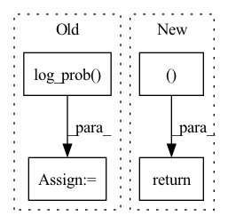

Pattern ID :2109
Before Change
d_x = d_x_dist.sample()
d_y = d_y_dist.sample()
p = tar_candit_pro * d_x_dist.log_prob( d_x) * d_y_dist.log_prob(d_y)
_, indices = p.topk(self.M, dim=1)
return tar_candit_pro, d_x, d_y, indicesAfter Change
// p = tar_candit_pro * d_x_dist.log_prob(d_x) * d_y_dist.log_prob(d_y)
_, indices = tar_candit_prob.topk(self.M, dim=1)
return tar_candit_prob, d_x, d_y, indices
// todo: offset_gt for every tar_candidate
def loss(self,
feat_in: torch.Tensor,In pattern: SUPERPATTERN
Frequency: 4
Non-data size: 4
Instances Fragment ID: 13960485
Project Name: henry1iu/tnt-trajectory-predition
Commit Name: 80b9bc9194db403722ff2868d67f8e92c73f17a7
Time: 2021-04-06
Author: liu.jb.henry@gmail.com
File Name: core/model/layers/target_prediction.py
M Class Name: TargetPred
N Class Name: TargetPred
M Method Name: forward(3)
N Method Name: forward(3)
M Parent Class: nn.Module
N Parent Class: nn.Module
M File Name: core/model/layers/target_prediction.py
N File Name: core/model/layers/target_prediction.py
M Start Line: 49
M End Line: 68
N Start Line: 52
N End Line: 72
Before Change
// KLD including logdet term
p_z_ = torch.sum(p.log_prob(z_), -1)
q0_z_0 = torch.sum(q0.log_prob( z_0) , -1)
log_det = log_det.view(-1)
kld = - torch.sum(p.log_prob(z_), -1) + torch.sum(q0.log_prob(z_0), -1) - log_det.view(-1)
self.test_params = [torch.mean(- torch.sum(p.log_prob(z_), -1)), torch.mean(torch.sum(q0.log_prob(z_0), -1)), torch.mean(- log_det.view(-1)), torch.mean(kld)]
After Change
zD = self.decode(z_)
out = torch.sigmoid(zD)
return out, kld
def bound(rce, x, kld, beta):
Fragment ID: 13960484
Project Name: vincentstimper/normalizing-flows
Commit Name: 9c5fb45265a7090efd8c3c51662fb24d7f5208bc
Time: 2020-03-08
Author: 43236963+lukasryll@users.noreply.github.com
File Name: normflow/inf_network.py
M Class Name: FlowVAE
N Class Name: FlowVAE
M Method Name: forward(2)
N Method Name: forward(2)
M Parent Class: nn.Module
N Parent Class: nn.Module
M File Name: normflow/inf_network.py
N File Name: normflow/inf_network.py
M Start Line: 73
M End Line: 95
N Start Line: 84
N End Line: 92
Before Change
a_dist = Normal(a_mu, a_sigma)
a = action if action is not None else a_dist.sample()
a_entropy = a_dist.entropy()
a_log_prob = a_dist.log_prob( a)
return a, a_log_prob, a_entropy
// class Actor(nn.Module):After Change
act = (action if action is not None else dist.sample())
act_entropy = dist.entropy()
act_log_prob = dist.log_prob(act)
return act, act_log_prob, act_entropy
class Critic(nn.Module):
def __init__(self, state_dim): Fragment ID: 13960479
Project Name: iffix/machin
Commit Name: 89695fab2bc63909df0f8994bac2700f121a9b62
Time: 2020-06-16
Author: hanhanmumuqq@163.com
File Name: test/frame/algorithms/test_ppo.py
M Class Name: Actor
N Class Name: Actor
M Method Name: forward(3)
N Method Name: forward(3)
M Parent Class: nn.Module
N Parent Class: nn.Module
M File Name: test/frame/algorithms/test_ppo.py
N File Name: test/frame/algorithms/test_ppo.py
M Start Line: 30
M End Line: 37
N Start Line: 27
N End Line: 33